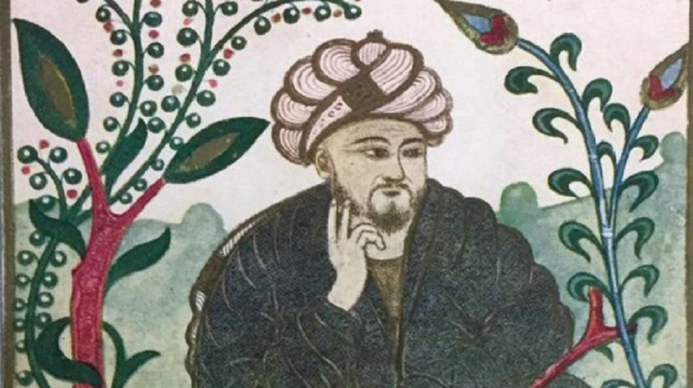

Welcome to the Mathematical World!
Al-Farabi
Philosopher, Scientist, and Early Islamic Polymath
Al-Farabi (c. 872 – c. 950 CE), also known as Abu Nasr Muhammad ibn Muhammad al-Farabi, was a renowned philosopher, scientist, logician, and musician of the Islamic Golden Age. Born in Farab (in present-day Kazakhstan or Turkmenistan), he later worked in Baghdad and other cultural centers of the Abbasid Caliphate. He was instrumental in preserving and developing the works of Aristotle and Plato, earning him the title “The Second Teacher” (after Aristotle) in Islamic intellectual tradition.
While Al-Farabi is most celebrated for his philosophical works, he also made important contributions to mathematics, logic, and the scientific methodology. He wrote extensively on logic, systematically organizing the Aristotelian corpus, and integrating it with Islamic thought. His treatises on syllogisms and deduction were foundational to later developments in both Islamic and Western logic.
In mathematics, Al-Farabi emphasized the application of logic to mathematical proof and reasoning. While not a mathematician in the computational sense like Al-Khwarizmi or Al-Kindi, he contributed to the classification of sciences and mathematics as a structured discipline. He discussed the nature of numbers, quantities, and mathematical objects in philosophical terms, bridging abstract reasoning with practical science.
Al-Farabi also studied musical theory and wrote Kitab al-Musiqa al-Kabir (The Great Book of Music), where he mathematically analyzed scales and intervals, relating them to ratios — a practice inherited from the Greek Pythagorean tradition. This work contributed to both the science of acoustics and the aesthetics of music in the Islamic world.
- Preserved and expanded Aristotelian logic in the Islamic tradition
- Developed philosophical foundations of science and mathematics
- Wrote influential works on music theory using mathematical principles
- Classified branches of knowledge and influenced both Islamic and Western scholars
Al-Farabi's influence extended through centuries, impacting later Islamic thinkers such as Avicenna (Ibn Sina) and even reaching medieval Europe via Latin translations. His holistic approach to knowledge, unifying philosophy, logic, science, and music, marked him as one of the most important intellectual figures of the early Islamic era.